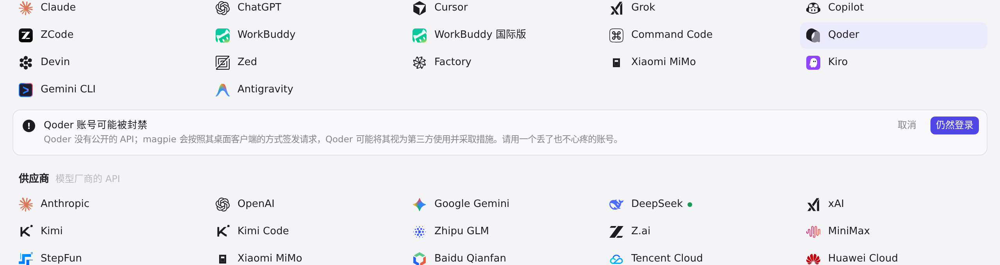
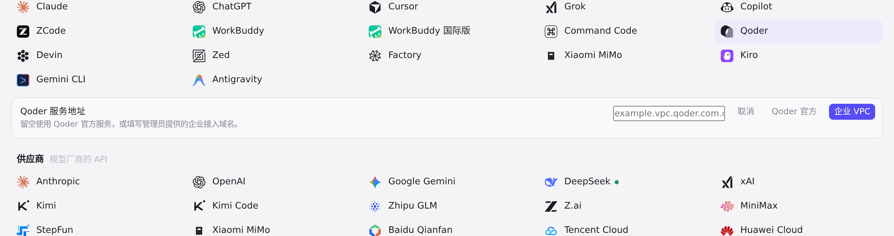
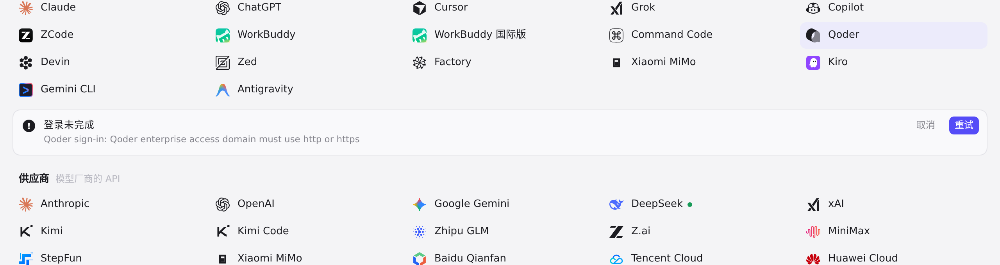

#319 界面预览
commit 63d3281 · 回到 PR · 在添加 Qoder 订阅的登录流程中新增企业接入地址步骤：Qoder 卡片显示 Pro · Enterprise，点击后先出现风险提示，确认后提示填写可选的企业接入域名（留空为官方），并对输入做校验；登录凭据会保存该域名，之后各请求改走对应端点。
红线是鼠标走过的轨迹，红色圆环是一次点击；底部文字是这一步在做什么。空格暂停，← → 逐段查看。

Qoder 企业 VPC 接入地址提示 · 登录前的风险提示

Qoder 企业 VPC 接入地址提示 · 企业接入地址输入步骤

Qoder 企业 VPC 接入地址提示 · 提交无效地址后的界面